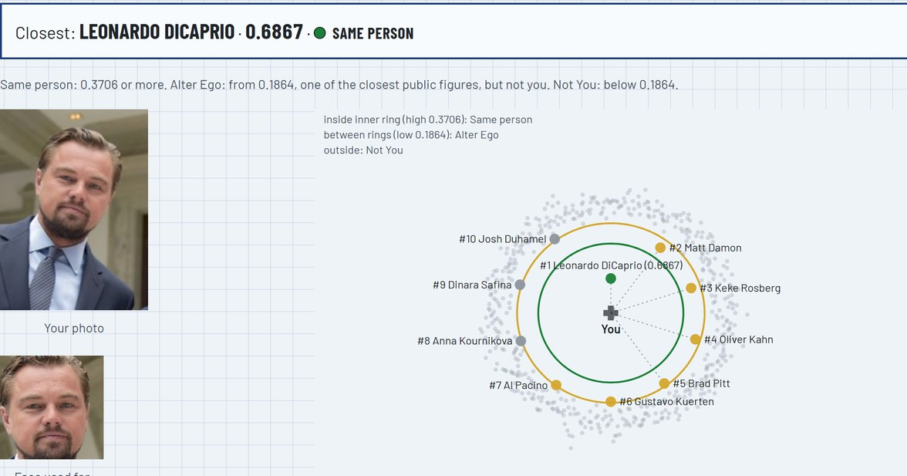
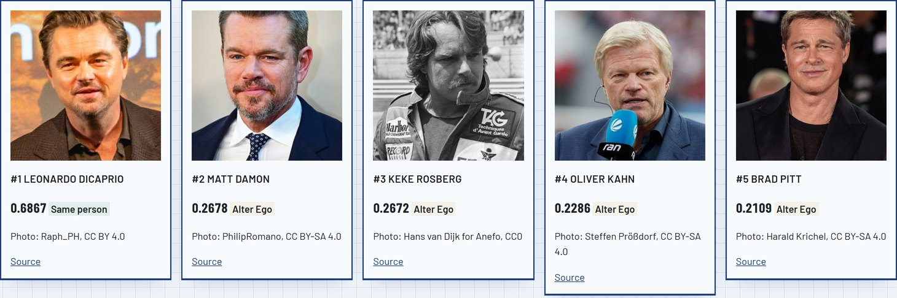

Most lookalike apps always name someone. This one also says when it is nobody:
Same personAlter EgoNot You
For anyone curious, and for data scientists who ask: how sure?
Your photo never leaves your computer.


DiCaprio, 0.6867: a different photo, still found
Matt Damon 0.2678 … Brad Pitt 0.2109 … Al Pacino 0.1931
of the 500 public figures
Photo: Presidencia de la República Mexicana, 2017, CC BY 2.0; others: Wikimedia Commons, credited in the app.
2 / 5“Against 500 faces, at most 2 of 200 strangers may be called Same person.”
From the spec and the measured spike, not from the code.
The one line that keeps the promise:
(queries @ index.T).max(axis=1) green
(queries @ index.T)[:, 0] redBreak it on purpose: the test fails. Put it back: it passes.
On the real pool: 0.9% of 567 strangers reach Same person
PLANNING_LOG.md, 8 October 2026 · tests/test_index_size_threshold.py · 288 tests passing
3 / 5Strangers wrongly called Same person by one fixed bar. So the bar is now fitted to the dataset's size.
Measured 1 October 2026: LFW, 200 people left out of the dataset, fixed bar 0.2017 (1% of pairs of strangers). data/spike_results.json
4 / 5esst-prog2.github.io/AlterEgo_Finder
Seven commands, then drop your photo. It never leaves your computer.